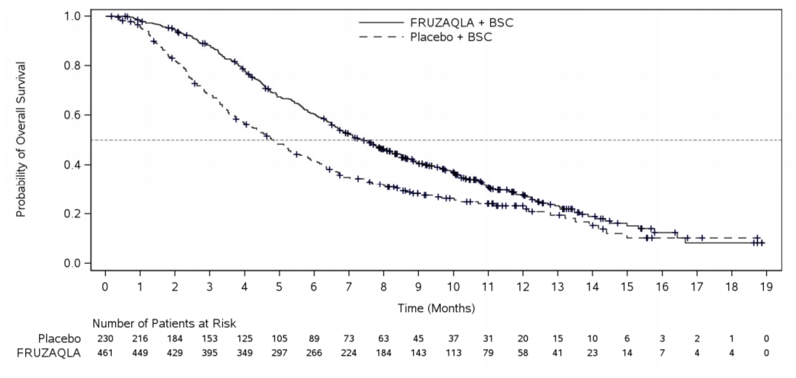

Overall Survival Analysis of Fruquintinib
Kaplan-Meier Methodology

•
Median overall survival was 11.3 months (95% CI 5.9-16.8 months) for standard-dose group versus 13.7 months (95% CI 8.0-16.1 months) for low-dose group.
•
The FRESCO phase III study reported median progression-free survival (PFS) of 3.7 months and overall survival (OS) of 9.3 months.
•
Univariate analysis was performed showing significant impact on PFS by clinical features such as ECOG PS ≥ 2.